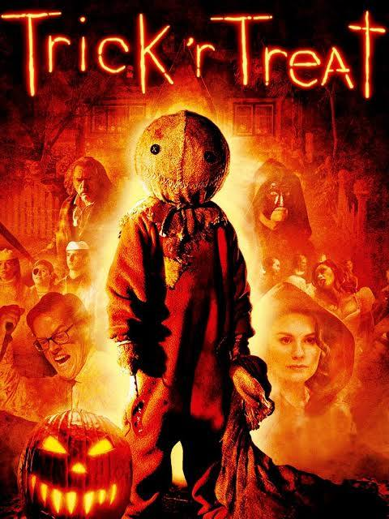
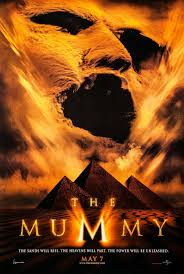

Movie Showcase
 
Sam, a trick-or-treating demon wearing orange footie pajamas with a burlap sack over his head. The character appears in each story whenever one of the other characters breaks a Halloween tradition.
The Mummy is a rousing, suspenseful and horrifying epic about an expedition of treasure-seeking explorers in the Sahara Desert in 1925. Stumbling upon an ancient tomb, the hunters unwittingly set loose a 3,000-year-old legacy of terror, which is embodied in the vengeful reincarnation of an Egyptian priest who had been sentenced to an eternity as one of the living dead.
10-year old Chihiro becomes trapped in a forbidden world of gods and magic when her parents take her to investigate the other side of the tunnel. In order to survive, Chihiro must work and make herself useful, and find within her the courage and resolve she needs to save her parents and escape from a world where humans are dispised.